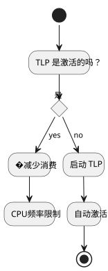

在 Ubuntu 下冷却并监控笔记本电脑的温度
Publié le 15 July 2025
Table of Contents
您是否感觉到您的笔记本电脑在Ubuntu下异常发热？ 这篇文章为您提出了一种方法软件完整的 为了冷却, �监控 et 控制温度您的机器的。
本指南的目标
-
降低计算机的整体温度
-
优化能源管理
-
�监控关键组件（CPU、GPU等）
-
避免由于造成的减速热降频

先决条件
-
Ubuntu 机器（推荐使用 20.04 或更高版本）
-
互联网连接
-
命令行能力（初级到中级）
安装并配置工具
lm-sensors` 用于检测传感器
sudo apt install lm-sensors
sudo sensors-detect
sensors|
请回答`YES`对所有问题的`sensors-detect`检测模块。 |
tlp` : 智能能源管理器
sudo apt install tlp tlp-rdw
sudo systemctl enable tlp
sudo systemctl start tlp
cpufrequtils` : 限制CPU频率
sudo apt install cpufrequtils
cpufreq-info
sudo cpufreq-set -g powersave-
powersave: 限制频率峰值 -
performance: 更倾向于功率，以牺牲温度为代价
auto-cpufreq` : 简化的动态管理
git clone https://github.com/AdnanHodzic/auto-cpufreq.git
cd auto-cpufreq
sudo ./auto-cpufreq-installer
sudo auto-cpufreq --install
thermald` : 自动热保护
sudo apt install thermald
sudo systemctl enable thermald
sudo systemctl start thermald实时监控
sensors` 在命令行中
watch -n 2 sensors选项 GUI : `psensor
sudo apt install psensor简单的 CPU、GPU、风扇图形界面。
额外技巧
-
关闭标签页和资源密集型应用程序 (例如: 浏览器)
-
避免在电池上进行高强度使用
-
通过监控进程`htop` :
sudo apt install htop
htop清理系统以限制过载
sudo apt autoremove
sudo apt autoclean
sudo journalctl --vacuum-time=3d更进一步
您可以创建一个服务`systemd`自定义以在启动时自动应用某些设置。 您想在下一篇文章中看到一个例子吗？请告诉我！
📚 结论
结合这些简单的工具，您将获得：
-
受控的CPU温度
-
更少的通风噪音
-
更好的自主性
请记得定期监控您的温度，以防止过热。
(No visible content to translate) 与其让CPU熔化，不如提前预防。 __